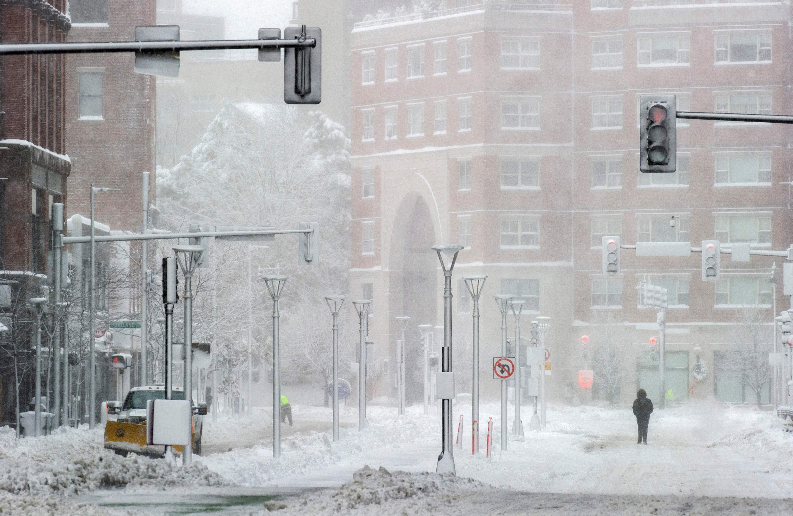

Why should I be concerned?
If you live in an area that experiences regular snowfall, chances are that you've been through at least a couple snow days. Large amounts of snowfall can put a stop to the functioning of modern society, delaying transportation, work, schools, and even electricity. Being prepared for snowfall can make all the difference in restoring order after a snowstorm. Proper snow management can mean the difference between a week of inactivity versus a day.
Snow management is often difficult and time consuming, whether you're an individual homeowner or a community manager. Snow can and will fall everywhere, including your roof, driveway, windows, cars, and more. If not dealt with, snow can not only obstruct your travel plans, but also cause wide ranging problems with regard to building maintenance and appliance malfunctions.
Too much snow first and foremost stifles transportation. In addition to road blockage, snow can also leave behind ice, which can be a major contributer to automobile accidents if left unchecked. Trains and planes may likewise be affected by large quantities of snow.
Shopping and public services are also affected by excess snowfall. Schools are delayed and retail stores may shut down, and electrical wiring could experience overloads or even collapse under snow.

A Closer Look at Snow Hazards
John F. Rooney, Jr has provided an in-depth look at the problems of snowfall and lack of snow management. In his paper "The Urban Snow Hazard in the United States", he identifies five levels of severity which may stem from excess snow: 5th order (minimal), 4th order (nuisance), 3rd order (inconvenience), 2nd order (crippling), and 1st order (paralyzing). These levels are organized by impact, not frequency. Rooney's research on seven US cities from 1953 to 1963 showed that all cities experienced at least 10 major crises (1st order) attributable to snowfall over this period.
Rooney's research also shows that midwestern areas are more likely to experience 2nd and 1st order disruptions. Areas with greater average accumulated snowfall experience higher rates of disruption overall at a statistically significant rate. Western areas, however, experience fewer snow-related problems on both frequency and intensity scales. The lower water content of western snow makes it easier to manage and less prone to condensing into large amounts of ice.
Interestingly enough, perceptions regarding the severity of snow-related problems was found to be a major contributer to the appropriateness of the response given in different areas. Perception was ascertained by interviewing people across the seven different cities about their attitude toward snow hazards. In particular, citizens of western cities harbored a laid back attitude toward snow. They tended to underestimate the potential problem and as a result, were unprepared to deal with the consequences of 2nd and 1st order disruptions. In response to the interviews, many western citizens responded that large snowstorms, such as the blizzard of 1949, were one time oddities or that the snow didn't interfere directly with their businesses. These attitudes have contributed to slower adjustment to larger snow related disruptions and exacerbated the consequences of these disruptions.
Snow management is crucial for alleviating the above problems and maintaining livelihood in the presence of snowfall. Awareness and attitudes toward snow management are also important factors in being able to provide an appropriate response to a snow hazard.
A table of Rooney's levels of disruption is provided below
| Activity |
5th Order (Minimal) |
4th Order (Nuisance) |
3rd Order (Inconvenience) |
2nd Order (Crippling) |
1st Order (Paralyzing) |
| Transportation |
Not measurable |
Any mention in press |
Accidents are twice as likely to occur |
Accidents are three times as likely to occur |
Few moving vehicles on streets, city agency on emergency alert |
| Retail Trade |
Not measurable |
Minor impact |
Major drop in number of shoppers |
Extensive closure of retail establishments |
| Postponements |
Occasional |
Minor Events |
Outdoor activities forced inside |
Civic events, cultural and athletic |
| Manufacturing |
Not measurable |
Any absenteeism attributable to snowfall |
Moderate worker absenteeism |
Factory shutdowns |
| Construction |
Any mention in press |
Minor effect on outdoor activity |
Moderate indoor cutbacks |
Major impact on outdoor and indoor operations |
| Communication |
Overloads |
Wire breakage |
| Power Facilities |
Minor difficulties |
Moerate difficulties |
Widespread failure |
| Schools |
Drop in attendance |
Closure of rural schools |
Closure of city schools |
| Highway |
Hazardous driving conditions warning |
Extreme driving conditions warning |
Roads officially closed |
| Rail |
Trains behind schedule |
Trains running 4 or more hours late |
Cancellation or postponements of 12 hours or more |
| Air |
Light plane cancellations |
Commercial cancellations |
Airport closure |